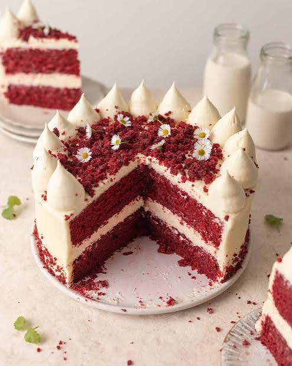

For many, Red velvet cake is the holiday cake. Come Thanksgiving, it’s arguably as much a staple as the turkey or the helpings of dressing, sweet potatoes, or cranberry sauce. Even after tucking into an array of dense, delicious savory dishes, there’s always room for a slice of the iconic pie, with its rich, well-spiced pumpkin filling and wonderfully flaky, buttery crust, thanks to the second (or dessert) stomach.
Even so, when there’s so much to make for a holiday feast, maybe you want to skip baking the pie and just pick one up at the store while you’re grabbing other ingredients. No shame in taking a shortcut when you can. You have way bigger fish—or turkeys—to fry.